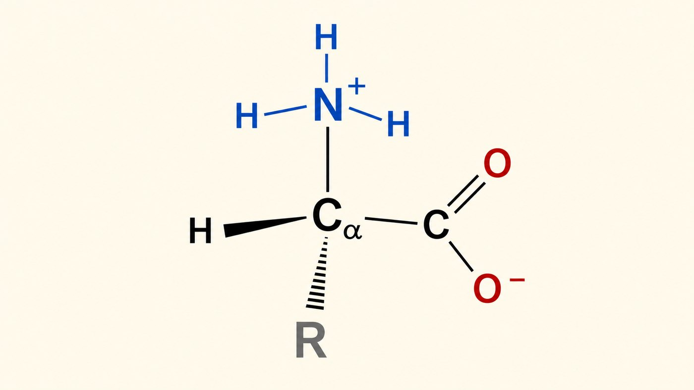
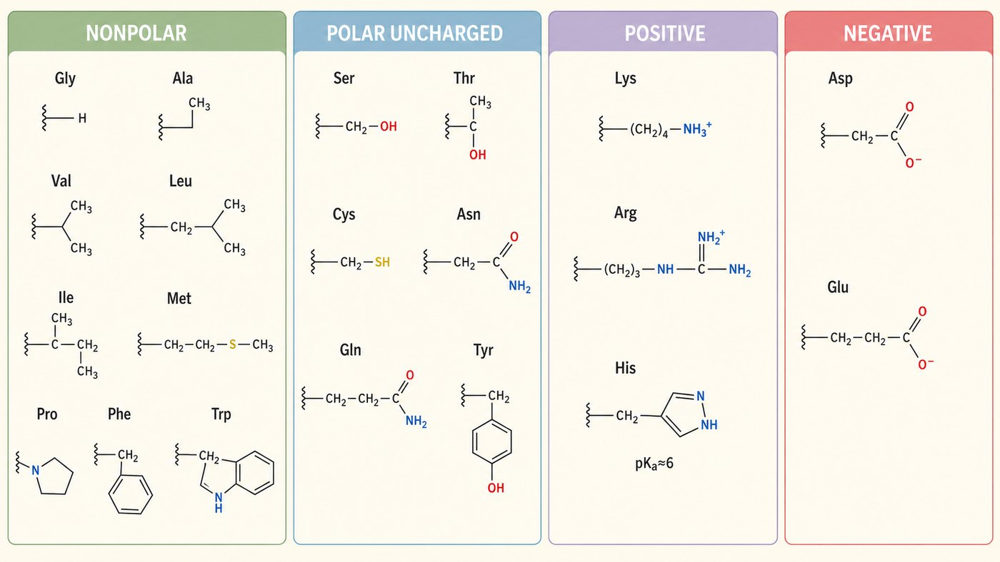
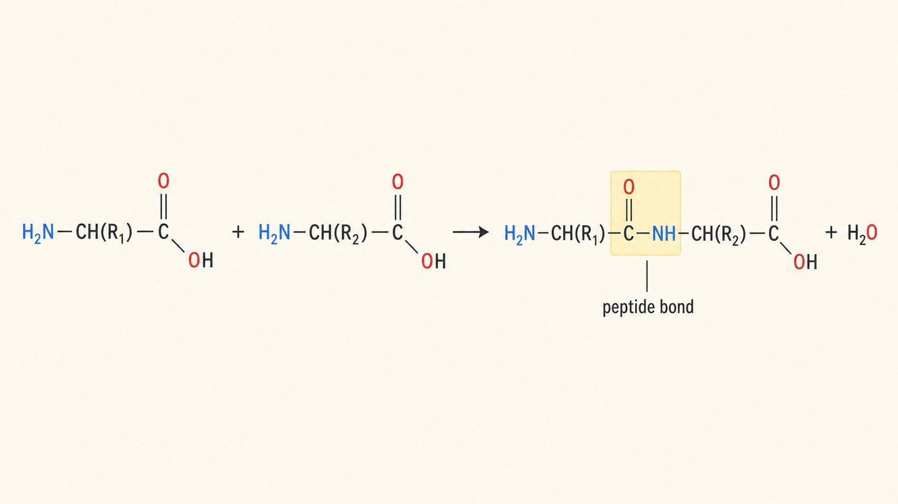

第 3 週
Amino acid và peptide
Nối tiếp tuần trước
是鹼。可以接 H⁺。
Nhóm amino — là base
是酸。可以放 H⁺。
Nhóm carboxyl — là acid
疏水效應讓分子聚集(第 2 週)。
pKa 決定解離狀態(第 2 週)。
Kiến thức cũ dùng hôm nay
胺基酸有兩個地方可以解離。所以有兩個 pKa。
Từ vựng · 不用背,看過就好
| 中文 | Tiếng Việt | English | 中文 | Tiếng Việt | English |
|---|---|---|---|---|---|
| 胺基酸 | Amino acid | Amino acid | 多肽 | Polypeptide | Polypeptide |
| 側鏈 | Mạch bên | Side chain | N端 | Đầu N | N-terminus |
| 胺基 | Nhóm amino | Amino group | C端 | Đầu C | C-terminus |
| 羧基 | Nhóm carboxyl | Carboxyl group | 兩性離子 | Ion lưỡng cực | Zwitterion |
| 胜肽 | Peptide | Peptide | 等電點 | Điểm đẳng điện | pI |
| 胜肽鍵 | Liên kết peptide | Peptide bond | 雙硫鍵 | Liên kết disulfide | Disulfide bond |
「胜肽」讀 shēng tài,不是 shèng。很多中文母語者也念錯。
Amino acid trông thế nào?

20 種胺基酸,結構幾乎一樣。只有一個地方不同。
那個地方叫「側鏈」。 Chỗ đó gọi là mạch bên (R).
4 phần
| # | 中文 | Tiếng Việt | 做什麼 |
|---|---|---|---|
| 1 | α碳 | Carbon α | 中心。四個東西接在上面。 |
| 2 | 胺基 | Nhóm amino | —NH₃⁺,是鹼 |
| 3 | 羧基 | Nhóm carboxyl | —COO⁻,是酸 |
| 4 | 側鏈 | Mạch bên (R) | 20 種的唯一差別 |
側鏈決定這個胺基酸的個性。 Mạch bên quyết định tính cách.
Phải vẽ dạng ion lưỡng cực
考試請畫兩性離子。 Khi thi hãy vẽ dạng ion lưỡng cực.
4 nhóm mạch bên

不要背 20 個結構。先記四類。
每一類的「個性」是什麼。這比結構重要。
Tính cách 4 nhóm
| 類別 | 水溶性 | 在蛋白質裡 | 例子 |
|---|---|---|---|
| 非極性 Không phân cực |
疏水性 | 躲在裡面 | Gly, Ala, Val, Leu, Phe |
| 極性不帶電 Phân cực |
親水性 | 形成氫鍵 | Ser, Thr, Cys, Asn |
| 帶正電 Tích điện dương |
親水性 | 鹼性側鏈 | Lys, Arg, His |
| 帶負電 Tích điện âm |
親水性 | 酸性側鏈 | Asp, Glu |
上週學過疏水效應。這裡用到了。
Vì sao nhóm không phân cực trốn vào trong?
Liên kết peptide

羧基 + 胺基 → 脫掉一個水
Nhóm carboxyl + nhóm amino → mất 1 phân tử nước
一定會跑出一個 H₂O。 Luôn tạo ra 1 H₂O.
3 điểm quan trọng
一定跑出一個 H₂O。
Luôn tạo 1 H₂O.
C—N 鍵不能轉。
六個原子同一平面。
Không xoay được.
N端 → C端。
序列一律這樣寫。
Đầu N → đầu C.
Nối bao nhiêu thì gọi là gì?
Điểm đẳng điện
| 發生什麼 | 淨電荷 | |
|---|---|---|
| pH < pI | 抓比較多 H⁺ | 帶正電 → 往負極跑 |
| pH = pI | 正負剛好抵銷 | 不動 |
| pH > pI | 放掉比較多 H⁺ | 帶負電 → 往正極跑 |
這就是電泳(điện di)的原理。用來分離蛋白質。
Liên kết disulfide
半胱胺酸的 —SH
互相接起來。
2 Cys nối với nhau.
不是弱作用力。
是真正的共價鍵。
Là liên kết cộng hóa trị.
它把蛋白質「釘」住。頭髮、胰島素都靠它。
Nó ghim protein lại. Tóc, insulin đều nhờ nó.
Bài tập: Phân loại
__________
__________
__________
__________
__________
__________
把這些側鏈歸類 Phân loại các mạch bên này:
四類:非極性 / 極性不帶電 / 帶正電 / 帶負電
Bài tập: Đúng hay sai
20 種胺基酸的差別在 α碳。
形成胜肽鍵會產生一分子水。
胜肽鍵可以自由旋轉。
在 pH = pI 時,蛋白質在電泳中不移動。
想一想:非極性側鏈躲哪裡?為什麼躲進蛋白質內部?
下週 · Tuần sau
Cấu trúc protein
▶ 課前:看詞彙表第 4 週(17 個詞)
Xem trước 17 từ của tuần 4
▶ 小測:下週前 10 分鐘,考今天的詞
Kiểm tra 5 câu, 10 phút đầu giờ
▶ 提示:今天的胜肽鍵平面。是下週 α螺旋的原因。
Gợi ý: mặt phẳng peptide → xoắn α